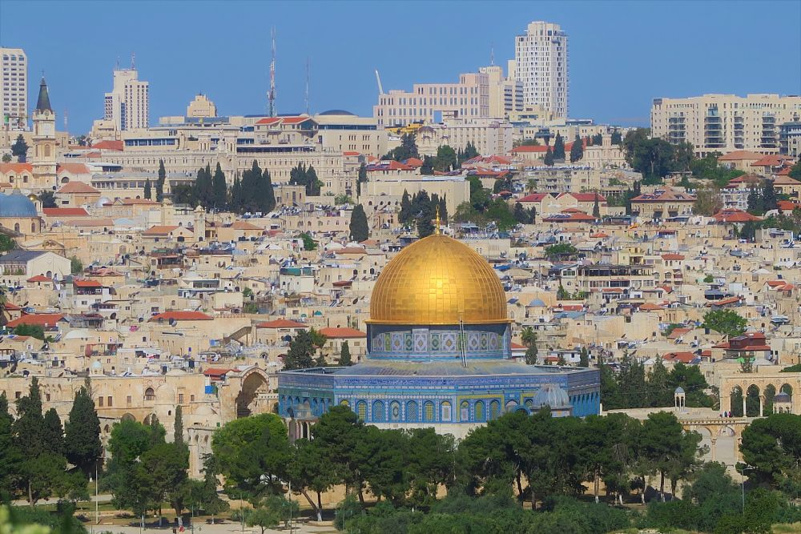
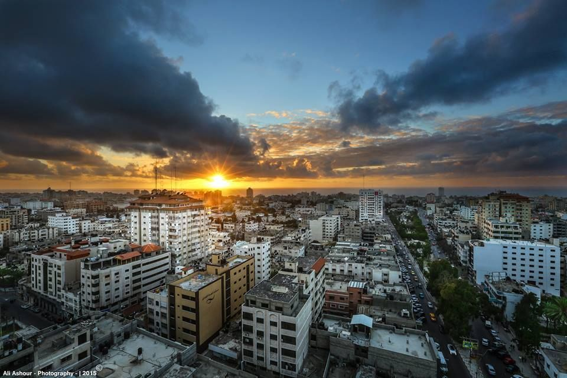
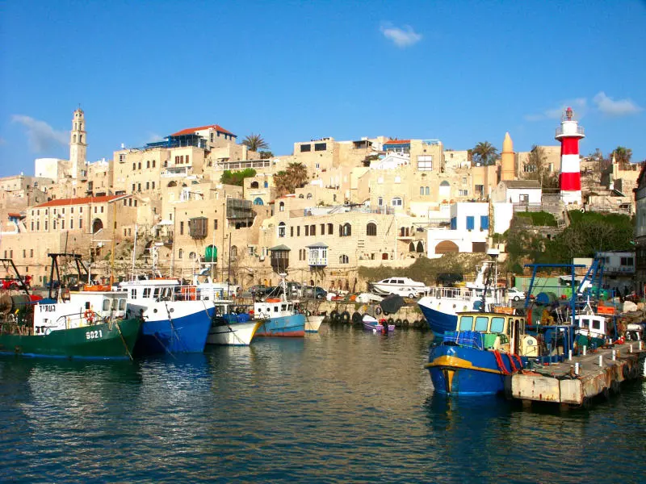

Cities That Tell the Story of Palestine 🏙️
From Jerusalem to Gaza, each city paints a vivid portrait of Palestine’s spirit,
culture, and strength.

Jerusalem
The spiritual and historical capital of Palestine.

Gaza
A coastal city known for resilience and beauty.

Ramallah
The cultural and political hub of the West Bank.

Jaffa (Yafa)
Historic port city with rich culture and deep roots.

Beersheba
Historic city in the Negev desert with Bedouin heritage.